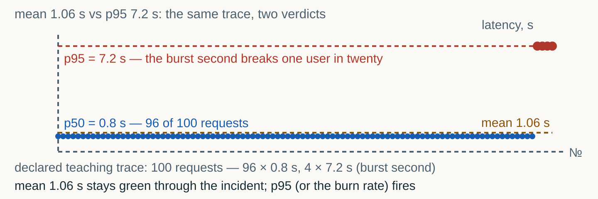
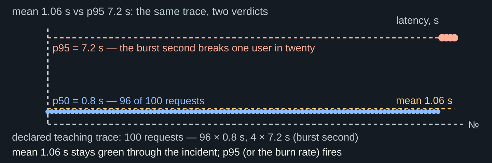
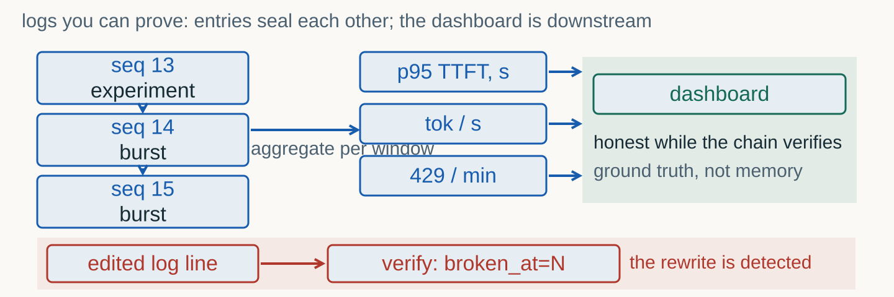
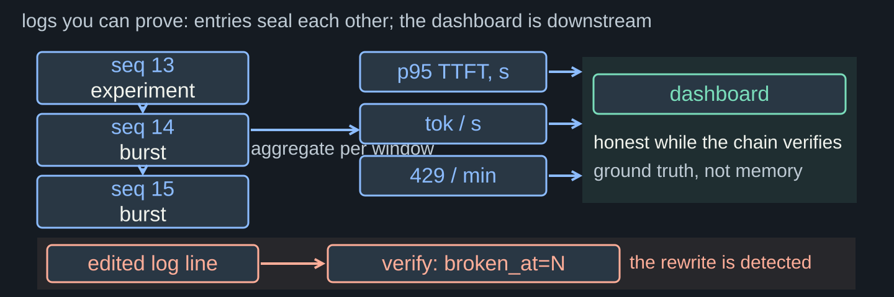
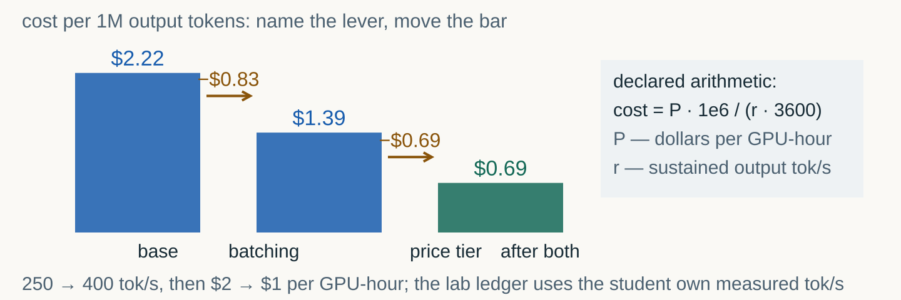

LLMOps:
observability, monitoring & cost controlLLMOps:
наблюдаемость, мониторинг и контроль стоимости
Green dashboards lie — tails, bills and verdicts you can reproduce.
Зелёные дашборды лгут — хвосты, счёта и воспроизводимые вердикты.
21:00: everything is green
21:00: всё зелёное
Topic 13 · draftThe incident
Every request answered 200. CI was green. The mean-latency chart was flat. And users were angry: one burst second stretched their requests to 7.2 s while the fleet politely reported health.
Инцидент
Каждый запрос отвечал 200. CI зелёный. График средней латентности плоский. А пользователи злые: одна бёрст-секунда растянула их запросы до 7,2 с, пока флот вежливо рапортовал о здоровье.
What “healthy” missed
The mean is insensitive to a hot second: 96 fast requests drown 4 slow ones. Health was defined as reachability, not as the promise the service actually made — latency within an SLO.
Чего не увидело «здоровье»
Средняя слепа к горячей секунде: 96 быстрых запросов топят 4 медленных. Здоровье определяли как достижимость, а не как обещание, которое сервис на самом деле дал, — латентность в рамках SLO.
The mean hides the tail
Средняя прячет хвост
Topic 13 · draft

Four golden signals — all from one journal
Четыре золотых сигнала — всё из одного журнала
Topic 13 · draft| SignalСигнал | SLI we declareДекларируемый SLI | Journal source (layer-2)Источник в журнале (слой-2) |
|---|---|---|
| LatencyЛатентность | p95 TTFT per 5-min windowp95 TTFT на 5-минутное окно | per-request timing of experiment entriesпотактовые времена записей экспериментов |
| TrafficТрафик | requests and tokens per minuteзапросы и токены в минуту | journal seq of experiment/burst entriesseq журнала записей experiment/burst |
| ErrorsОшибки | 429 and 5xx rate per minuteдоля 429 и 5xx в минуту | burst payload: admitted vs rejectedполезная нагрузка burst: допущено против отклонено |
| SaturationНасыщение | queue depth / backlogглубина очереди / бэклог | burst payload: slots, queue_slots, waitsполезная нагрузка burst: слоты, queue_slots, ожидания |
Logs you can prove
Логи, которые можно доказать
Topic 13 · draftOne stack, three views
Logs, metrics and traces are three views of the same events. In our stack the layer-2 journal plays all three at course scale: per-request records (logs), aggregates (metrics), request lifecycles (traces).
Один стек, три вида
Логи, метрики и трейсы — три взгляда на одни события. В нашем стеке журнал слой-2 играет все три в масштабе курса: записи на запрос (логи), агрегаты (метрики), жизненные циклы запросов (трейсы).
Why this journal is different
It is append-only and hash-sealed — lab 9 proved the drill: an edited line fails verification with broken_at:N. A dashboard fed by a provable journal is ground truth; one fed by editable logs is a rumor.
Чем этот журнал другой
Он append-only и запечатан хэшами — лаба 9 доказала дрилл: правленая строка падает на проверке с broken_at:N. Дашборд, питаемый доказуемым журналом, — источник истины; питаемый правимыми логами, — слух.
Journal → metrics → dashboard
Журнал → метрики → дашборд
Topic 13 · draft

Anatomy of a journal entry
Анатомия записи журнала
Topic 13 · draft| FieldПоле | FeedsПитает | Fails how if missingКак ломается без него |
|---|---|---|
seq | ordering; gaps = lost eventsпорядок; дыры = потерянные события | metrics over silent holesметрики по тихим дырам |
ts | windowing, bucketingокна, корзины | “when” is a guess; no SLO window«когда» — догадка; окна SLO нет |
kind | experiment vs burst → which metricexperiment против burst → какая метрика | 429 rate pollutes latency seriesдоля 429 загрязняет ряд латентности |
payload | tokens, wall, tok/s, waitsтокены, wall, ток/с, ожидания | the values themselves vanishсами значения исчезают |
prev-hash | verifiability of the whole historyпроверяемость всей истории | any rewrite passes silentlyлюбая перепись проходит молча |
From incident to verified fact
От инцидента к проверенному факту
Topic 13 · draftBurn rate: when a breach becomes a page
Burn rate: когда breach становится пейджем
Topic 13 · draftAlert rules: symptoms, not causes
Правила алертов: симптомы, а не причины
Topic 13 · draft| RuleПравило | WindowОкно | ActionДействие | Why this shapeПочему такая форма |
|---|---|---|---|
| burn ≥ 8.3× on p95 TTFTburn ≥ 8,3× по p95 TTFT | 10 min | page the on-callпейдж дежурному | fast, severe — the promise is breaking nowбыстро, тяжело — обещание ломится сейчас |
| burn ≥ 3×burn ≥ 3× | 1 h | ticketтикет | slow erosion — humans can read it in the morningмедленная эрозия — люди прочтут утром |
| 429 rate > 30/min sustainedдоля 429 > 30/мин устойчиво | 5 min | ticket + capacity reviewтикет + обзор ёмкости | admission doing its job, but load shape changedдопуск делает своё дело, но форма нагрузки сменилась |
| mean-latency thresholdпорог средней латентности | — | removedудалено | the anti-example: green through the incidentанти-пример: зелёный весь инцидент |
Alert fatigue vs silent failure
Усталость от алертов против тихого отказа
Topic 13 · draftFalse pages destroy the channel
Every page that wakes nobody’s action trains the on-call to swipe it away. An alert must be actionable: it names the SLO, the window and the lever. If the response is “look later”, it is a ticket.
Ложные пейджи убивают канал
Каждый пейдж, на который никто не действует, приучает дежурного смахивать их. Алерт обязан быть действенным: он называет SLO, окно и рычаг. Если ответ «посмотрю позже» — это тикет.
Silence destroys the promise
The opposite failure: the mean-threshold alert that never fired during the 21:00 breach. A channel that only cries once a quarter is fine — provided the quarter’s cry is real.
Тишина убивает обещание
Противоположный отказ: алерт по средней, который молчал весь breach 21:00. Канал, который плачет раз в квартал, — норм, если плач квартала настоящий.
The bill: cost per 1M output tokens
Счёт: цена миллиона выходных токенов
Topic 13 · draftCost levers: name the lever, move the bar
Стоимостные рычаги: назови рычаг, двигай планку
Topic 13 · draft

The lever catalog
Каталог рычагов
Topic 13 · draft| LeverРычаг | MechanismМеханизм | Effect on $/1MЭффект на $/1 млн | First riskПервый риск |
|---|---|---|---|
| BatchingБатчинг | higher sustained tok/sвыше устойчивый ток/с | −37% (250 → 400)−37 % (250 → 400) | latency of the batchлатентность батча |
| Price tierТариф | spot/cheaper GPU-hourspot/дешевле GPU-час | −50%−50 % | availability, preemptionдоступность, вытеснение |
| AdmissionДопуск | 429 for the worst tail429 худшему хвосту | keeps SLA for the restдержит SLA остальным | fairness: who is rejectedсправедливость: кого отказывают |
| Prompt cacheПромпт-кэш | skip prefill on reuseпропуск prefill при переиспользовании | prefill only — output untouchedтолько prefill — вывод не тронут | stale cache = wrong answersпротухший кэш = неверные ответы |
429 is a cost instrument
429 — стоимостной инструмент
Topic 13 · draftRejecting is cheaper than serving late
The lab 08 envelope: bounded slots + queue, 429 + honest Retry-After. A rejection costs nothing and tells the client the truth; a late answer costs the SLA and invites retries, which amplify the load that caused them.
Отказ дешевле позднего сервиса
Конверт лабы 08: ограниченные слоты + очередь, 429 + честный Retry-After. Отказ не стоит ничего и говорит клиенту правду; поздний ответ стоит SLA и приглашает ретраи, которые усиливают породившую их нагрузку.
Fairness is a policy, not an accident
Who gets the 429? FIFO is honest to arrival order and brutal to bursty clients; the journal records every rejection, so the policy is auditable — and the audit is part of the runbook.
Справедливость — политика, а не случайность
Кому 429? FIFO честен к порядку прихода и жесток к бёрст-клиентам; журнал записывает каждый отказ, поэтому политика аудируема — и аудит часть ранбука.
The score drifts
Оценка дрейфует
Topic 13 · draftSame suite, different verdicts
Run the same 100 prompts twice — batched versus isolated, warm cache versus cold — and six verdicts flip. Batch composition changes numerics and timing; the scheduler reorders work; a cache hit hides a regression.
Тот же сьют, другие вердикты
Прогони одни и те же 100 промптов дважды — батчем против изолированно, тёплый кэш против холодного, — и шесть вердиктов перевернутся. Состав батча меняет численность и тайминги; шедулер переставляет работу; попадание в кэш прячет регрессию.
The invariant protocol
Fixed prompt order, seeded decoding, cache-busting between samples, per-sample isolation. A verdict you cannot reproduce is not a verdict — it is weather. The judge scores only invariant runs.
Инвариантный протокол
Фиксированный порядок промптов, сидированное декодирование, сброс кэша между сэмплами, изоляция на сэмпл. Вердикт, который не воспроизвести, — не вердикт, а погода. Джадж оценивает только инвариантные прогоны.
Judge-grade reproducibility
Воспроизводимость уровня джаджа
Topic 13 · draft| RequirementТребование | What it killsЧто убивает | Where you met itГде вы его видели |
|---|---|---|
| pinned environment (lockfile)запиненное окружение (lockfile) | “worked on my machine”«у меня работало» | Round 01 setup, Topic 09 imageустановка Round 01, образ темы 09 |
| declared seedsзаявленные сиды | lucky samplingвезучий сэмплинг | every lab journalжурнал каждой лабы |
| batch-invariant suiteбатч-инвариантный сьют | verdict weatherпогода вердиктов | this topic’s protocolпротокол этой темы |
| snapshot at the deadlineснимок на дедлайне | moving targetsдвигающаяся цель | round tags + judge captureтеги раундов + снимок джаджа |
| private thresholdsприватные пороги | overfitting the graderоверфит грейдера | the judge itselfсам джадж |
The drift drill
Дрилл дрейфа
Topic 13 · draftTwo failure stories
Две истории отказов
Topic 13 · draftStory 1: the silent breach
Mean green, p95 at 7.2 s for forty minutes. Detection: the burn-rate page (8.3×, slide 9). Mitigation: tighten the admission envelope and scale on the backlog signal — both levers the students already operate.
История 1: тихий breach
Средняя зелёная, p95 = 7,2 с сорок минут. Обнаружение: burn-rate-пейдж (8,3×, слайд 9). Смягчение: ужать конверт допуска и масштабировать по сигналу бэклога — оба рычага студенты уже держат в руках.
Story 2: the edited history
Someone “fixes” a log line to hide the breach. Detection: chain verification names broken_at:N. Mitigation: dashboards read the journal only; hand-edited history is not a source, it is evidence of a second incident.
История 2: правленая история
Кто-то «чинит» строку лога, чтобы спрятать breach. Обнаружение: проверка цепочки называет broken_at:N. Смягчение: дашборды читают только журнал; правленая история — не источник, а доказательство второго инцидента.
The runbook skeleton
Скелет ранбука
Topic 13 · draft| SymptomСимптом | QueryЗапрос | LeverРычаг | RollbackОткат |
|---|---|---|---|
| p95 breach, burn 8.3×breach p95, burn 8,3× | journal window 21:00–21:05окно журнала 21:00–21:05 | tighten queue_slotsужать queue_slots | widen after load passesрасширить, когда нагрузка пройдёт |
| bill doublesсчёт удвоился | cost ledger by leverстоимостная ведомость по рычагам | price tier / admissionтариф / допуск | revert tier, keep SLAоткатить тариф, сохранить SLA |
| verdicts flipвердикты переворачиваются | invariant suite re-runповтор инвариантного сьюта | protocol B as the scoreпротокол B как оценка | investigate run A cacheразобрать кэш прогона A |
| chain verify failsпроверка цепочки падает | broken_at indexиндекс broken_at | freeze dashboardsзаморозить дашборды | restore from sealed backupвосстановить из запечатанной копии |
What this model omits
Чего эта модель не показывает
Topic 13 · draftDeclared simplifications
No GPU/kernel traces, no multi-node correlation, token accounting approximate, prices flat. The journal is a gateway-level view: it sees requests and tokens, not SM occupancy.
Заявленные упрощения
Никаких GPU/kernel-трейсов, никакой межузловой корреляции, учёт токенов приблизителен, цены плоские. Журнал — вид уровня шлюза: он видит запросы и токены, а не SM-occupancy.
Why it still holds
The method — SLI → SLO → burn-rate → invariant evaluation — is layer-independent. Deeper traces multiply the number of fields, not the discipline of naming sources, windows and percentiles.
Почему метод всё равно держится
Метод — SLI → SLO → burn rate → инвариантная оценка — не зависит от слоя. Глубокие трейсы умножают число полей, а не дисциплину называния источников, окон и перцентилей.
Measurement contract and deliverable
Контракт измерения и сдаваемое
Topic 13 · draftThe contract
Every number is journaled, the chain is verified, the percentile and window are named, prices are declared. A number without a source field is a mood; a source without a window is a rumor.
Контракт
Каждое число журналируется, цепочка проверена, перцентиль и окно названы, цены заявлены. Число без поля-источника — настроение; источник без окна — слух.
The deliverable
Your fleet: one SLO, one alert predicate with its window, one cost ledger with measured r, and the runbook skeleton filled with rehearsed rows. These are the first artifacts of the T16 defense story.
Сдаваемое
Ваш флот: один SLO, один предикат алерта с окном, одна стоимостная ведомость с измеренным r и скелет ранбука, заполненный отрепетированными строками. Это первые артефакты защиты T16.
The block ahead
Блок впереди
Topic 13 · draftT14: adapters change quality and cost
LoRA adapters multiply tenants over one base model — quality per tenant, switching costs, mixed traffic. Every claim about them is a measurement, and you now own the instruments to see it.
T14: адаптеры меняют качество и цену
LoRA-адаптеры множат арендаторов над одной базовой моделью — качество на арендатора, цена переключения, смешанный трафик. Каждое заявление о них — измерение, и инструменты, чтобы его видеть, у вас теперь есть.
T15: the workload changes shape
Agentic loads fork, wait on tools and reuse prefixes; prefill and decode split into roles. Your admission envelope meets its real enemy: a workload that breathes.
T15: нагрузка меняет форму
Агентные нагрузки форкаются, ждут инструменты и переиспользуют префиксы; prefill и decode делятся на роли. Ваш конверт допуска встречает настоящего врага: дышащую нагрузку.
Trends: agents optimize the infrastructure
Тренды: агенты оптимизируют инфраструктуру
Topic 13 · draft · closing preview| TrackТрек | The factФакт | What it means for youЧто это значит для вас |
|---|---|---|
| Infrathon (arXiv 2611.11995) | coding agents optimize real infra on 12–24 h budgets; rankings shift with horizon; 135/150 runs improve in the second halfкодинг-агенты оптимизируют настоящую инфру на бюджетах 12–24 ч; рейтинги плывут с горизонтом; 135/150 прогонов улучшаются во второй половине | short evaluations lie — the lesson you just learned about means, applied to agentsкороткие оценки лгут — урок о средних, применённый к агентам |
| The barrier listСписок барьеров | task violations, testing the wrong code, premature completion — caught by a controllerнарушения задачи, тестирование чужого кода, преждевременное завершение — ловит контролёр | someone must write the contract; that someone is an engineerконтракт должен кто-то написать; этот кто-то — инженер |
| Your capstone (T16)Ваш капстоун (T16) | you supervise YOUR agent over the lab 08 admission policy; artifacts graded, not outputвы надзираете за СВОИМ агентом над admission-политикой лабы 08; оцениваются артефакты, а не вывод | the engineering action becomes: design the contract, control the agentинженерное действие: спроектируй контракт, контролируй агента |
Read nextЧитать дальше
Sources behind today’s numbersИсточники сегодняшних чисел- Beyer, B. et al. (Google) · Site Reliability Engineering — Monitoring Distributed Systems · SRE BookSRE Book — golden signals; latency percentiles over means.золотые сигналы; перцентили латентности вместо средних.2016
- Google SRE · SRE Workbook — Alerting on SLOs · SRE WorkbookSRE Workbook — burn-rate multiwindow alerting used on slide 9.многооконный burn-rate-алертинг со слайда 9.2018
- Prometheus · Alerting rules overview · Prometheus docsдокументация Prometheus — predicate/window mechanics behind slide 10.механика предикатов и окон со слайда 10.2026
- vLLM project · Production metrics · vLLM docsдокументация vLLM — the production-grade surface our journal models at course scale.продакшен-поверхность, которую наш журнал моделирует в масштабе курса.2026
- Hu, Z. et al. · Infrathon: Benchmarking Language Agents for Real-World, Long-Horizon AI Infra Optimization · arXiv — the trends slide and the T16 capstone.слайд трендов и капстоун T16.2026
- This repositoryЭтот репозиторий · judge/README.md — scoring, snapshot and reproducibility rulesправила оценивания, снимков и воспроизводимости · in-repoв репо — the worked instance of batch-invariant evaluation.рабочий образец батч-инвариантной оценки.2026
Зелёный дашборд — не здоровье.
Средняя — не латентность.
A green dashboard is not health.
The mean is not latency.
Name the SLI. Set the SLO. Verify the chain.
Page on the burn rate. Price the lever. Reproduce the verdict.
Назови SLI. Поставь SLO. Проверь цепочку.
Пейдж по burn rate. Оцени рычаг. Воспроизведи вердикт.